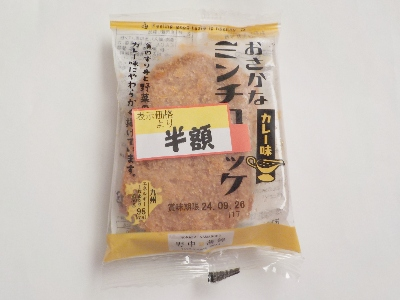

野中蒲鉾のおさかなミンチコロッケ カレー味。
2024/09/25

お魚コロッケってイワシミンチベースの蒲鉾のイメージがあったんですが、この商品は白身系の天ぷらが入っていました。
玉ねぎの入った甘い天ぷらとカレー味がよく合っていて美味しかったです。
ハムカツの中身が薄い天ぷらな感じで、おかず、おつまみ、あやつにしても合いそうだと思いました。
佐賀県佐賀市西与賀町高太郎234
2024/09/25

お魚コロッケってイワシミンチベースの蒲鉾のイメージがあったんですが、この商品は白身系の天ぷらが入っていました。
玉ねぎの入った甘い天ぷらとカレー味がよく合っていて美味しかったです。
ハムカツの中身が薄い天ぷらな感じで、おかず、おつまみ、あやつにしても合いそうだと思いました。